Games
Final Fantasy XIV
5 Ultimates cleared
The Legend of Zelda: Tears of the Kingdom
100% completion
I Wanna Be The Guy
I built iwanna-gym, an RL environment with exact I Wanna fangame physics: 5.8M steps/s C core, PufferLib-ready, goal-conditioned (HER/GCRL) support, 10 levels.
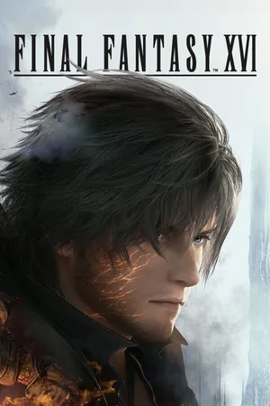
Square Enix, 2023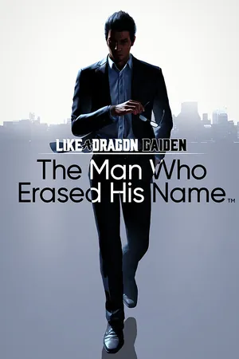
Ryu Ga Gotoku Studio, 2023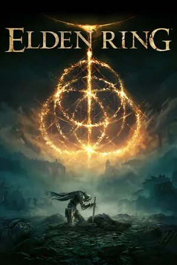
FromSoftware, 2022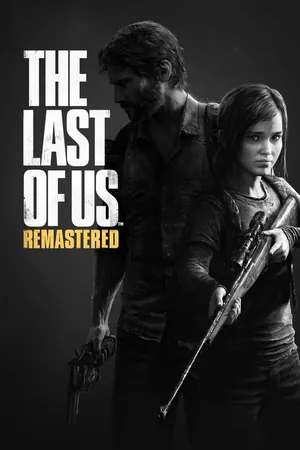
Naughty Dog, 2014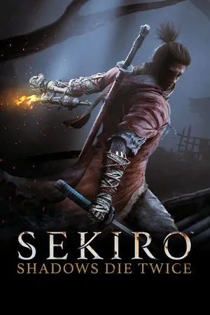
FromSoftware, 2019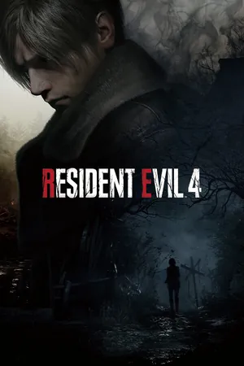
Capcom, 2023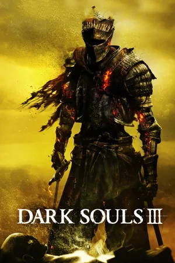
FromSoftware, 2016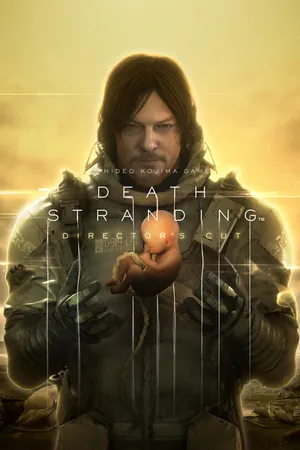
Kojima Productions, 2021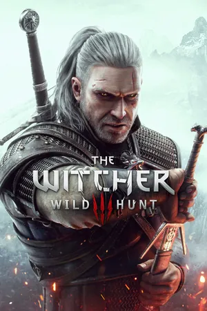
CD Projekt Red, 2015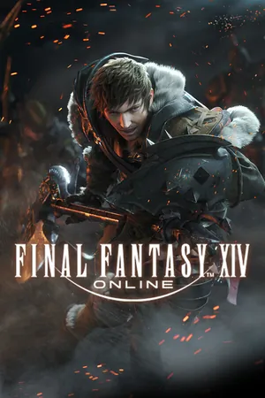
Square Enix, 2013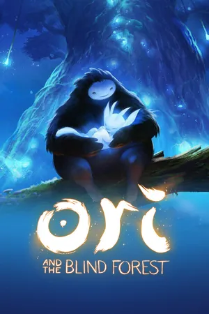
Moon Studios, 2015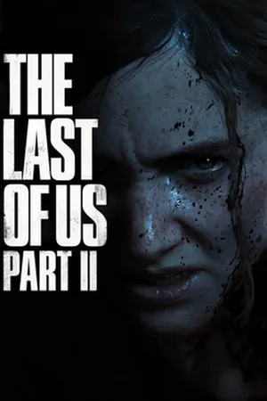
Naughty Dog, 2020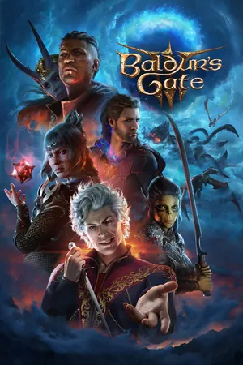
Larian Studios, 2023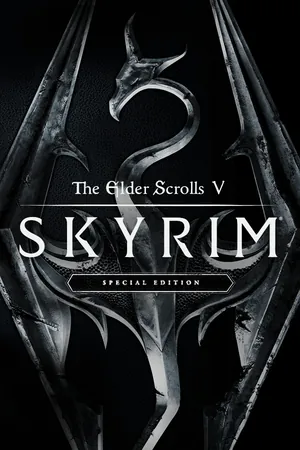
Bethesda Game Studios, 2011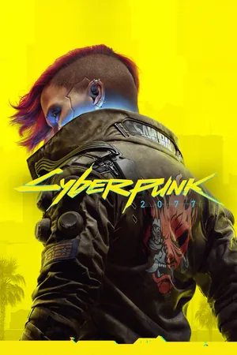
CD Projekt Red, 2020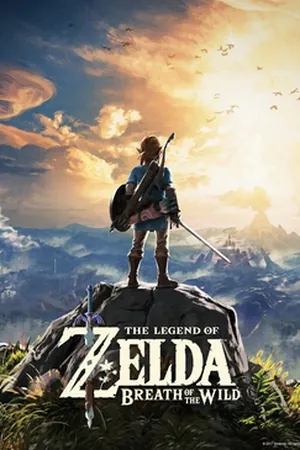
Nintendo, 2017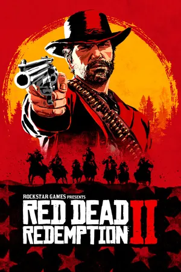
Rockstar Games, 2018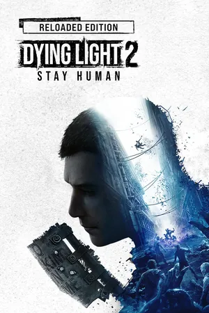
Techland, 2022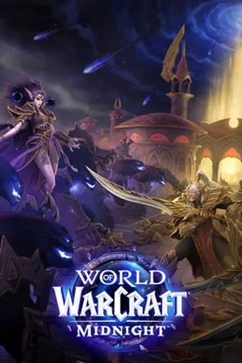
Blizzard Entertainment, 2026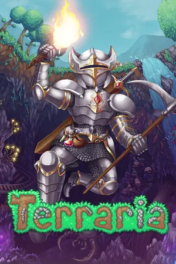
Re-Logic, 2011- Rayark, 2018
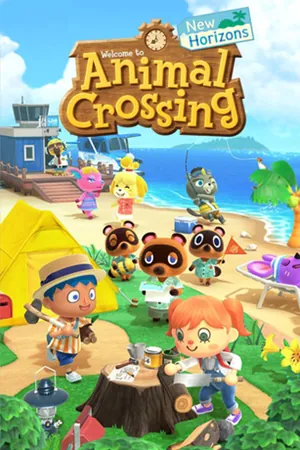
Nintendo, 2020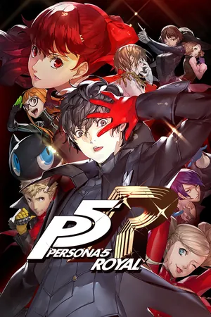
Atlus, 2019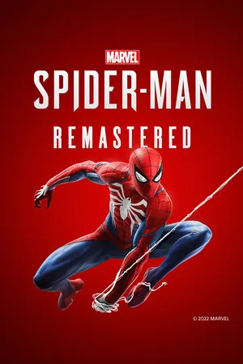
Insomniac Games, 2020